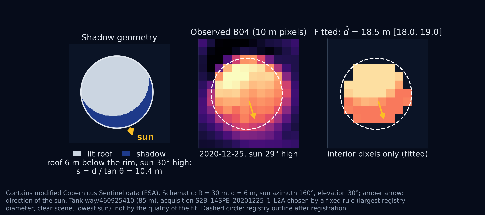
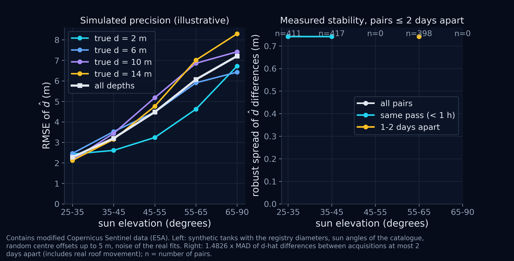
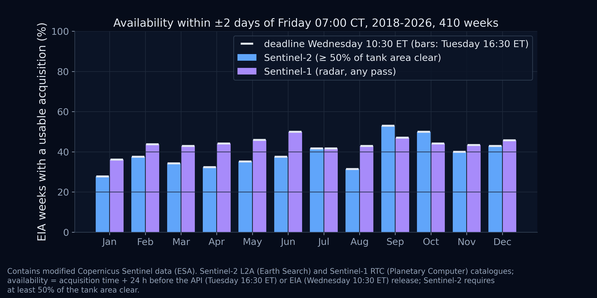
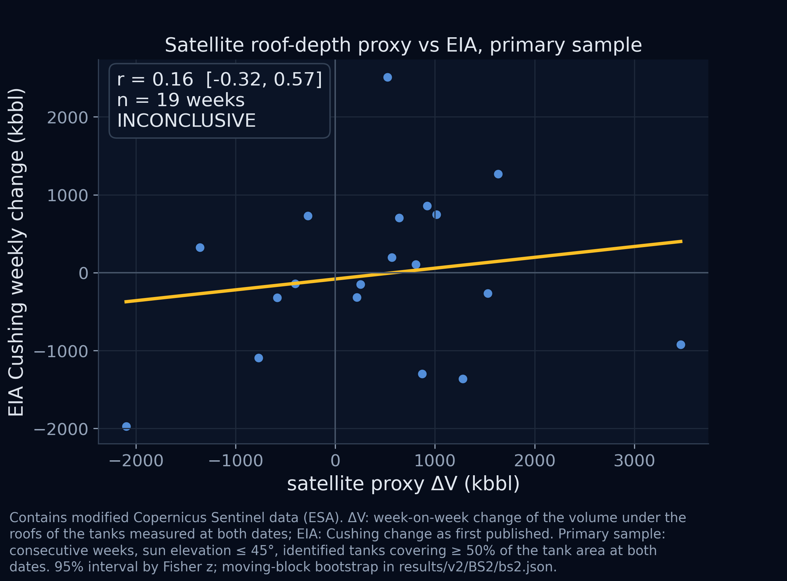
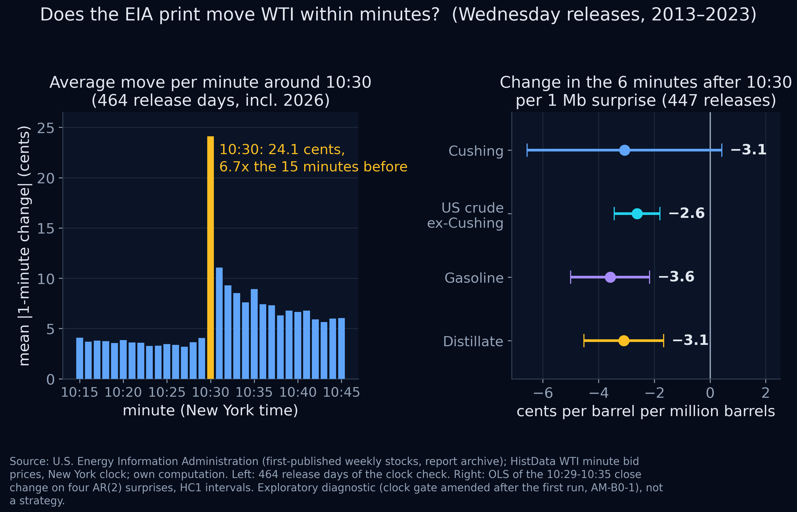

This document complements the deck. The deck gives the argument; this document gives a quantitative researcher what is needed to judge it: definitions, models, protocols, the exact files behind each number, and the statistical limits of what has been and can be shown. Paths are relative to the repository root. No strategy backtest, paper record or live result exists, and none is implied.
Objective. Build, within a six-month internship, one systematic strategy whose edge comes from information the market has not yet priced, and prove it at a level that justifies capital. The system is asset-class independent: sources, measurement and regimes change per idea; point-in-time discipline, validation and risk do not. Six ideas share it; I1 is developed first because its data can be tested now on free sources.
State of the work on 25 October 2026.
| Rule | Implementation in the repository |
|---|---|
| Pre-registration | prereg/tests_v1.json (T1–T5), SHA-256 66bec92f8383607c1777e3d69c23aa8abd25efa1f90bead18fc9f22615f1cbbe; prereg/tests_v2.json (T1c, T2c, BS0–BS2, B0), SHA-256 acfe66efb2878adf811e5b58aea99ff14048199728a9d76cc1045c67da67d84f, frozen 2026-10-25 01:21 (+02:00) and recorded in results/v2/prereg_v2.sha256. Scripts stop if the hash differs. |
| Single run, trial log | Each test ran once. The v2 scripts for T1c, T2c and B0 refuse to overwrite an existing result. Every v2 run appends a line (id, timestamp, script, hash, verdict, seconds) to results/v2/trial_log_v2.csv: ids BS1, BS0+BS1, BS2, FIG, T1c, T2c, B0, B0-AM1. |
| Deviations before statistics | Implementation choices left open by the pre-registration are dated and written before the statistic they affect: results/deviations.md, results/v2/deviations_v2.md (13 items for B-S, 9 for T1c/T2c/B0). |
| Amendments | One: AM-B0-1, after the B0 validity gate failed and before any outcome was computed. The blocked first run stays in results/v2/B0/; the amended run is results/v2/B0_amended/ and is reported as exploratory. |
| Verdicts | Three outcomes, fixed in advance: supported / not supported / inconclusive (or signal / no signal / inconclusive). Inconclusive is never a pass. |
| Point-in-time | Availability timestamps, not event timestamps, define what is known. EIA values are first publications from the report archive; satellite scenes count from their publication time. |
| Secrets and licences | API keys are read from the environment and never printed or committed. Licensed data (HistData minute files) and image caches are not redistributed; scripts rebuild caches from the sources. |
The scaffold is Implemented for data access, point-in-time storage, statistics and validation; the regime, fusion and risk layers are Proposed for I1 and specified below.
Interface contract. Every layer passes, at a timestamp, a value, an uncertainty interval, an age and a coverage flag. A week without an admissible measurement falls back to the public model; uncertainty is propagated, not discarded. Engineering per data type: optical and radar images use physical forward models first (Section 5) and learned models only when labels exist; text uses embeddings with explicit look-ahead controls (filing dates, anonymised identifiers); flows use sequence models; tabular series use linear models or trees.
| Idea | Status | Mechanism and evidence in this repository |
|---|---|---|
| I1 Energy inventories | Developed | Physical stock measurement before the EIA report (this document). |
| I2 European power and gas | Prepared | Weather balance moves prices and storage draws. T4: −15.9 EUR/MWh per +10 points of wind and solar share (t = −16.4; results/T4.json); T5: +645 GWh/d of EU net withdrawal per heating degree day (t = 37.5; results/T5.json). Mechanisms, not signals: forecasts are as published, after the auction. |
| I3 Equity revenue before earnings | Next | Transaction or geolocation panels nowcast revenue; needs a panel with point-in-time history. |
| I4 Text, I5 crops, I6 event volatility | Reserve | Same discipline; PnL of I4 not quantified (effective number of bets unknown). |
EIA stocks are as of Friday 07:00 CT; the industry (API) estimate is published Tuesday 16:30 ET; the EIA Weekly Petroleum Status Report is published Wednesday 10:30 ET, shifted in holiday weeks. Release dates come from the EIA report archive (796 releases since 2011, audit/eia_release_registry.csv): the rule calendar used by v1 misdated 14 of 660 weeks in 2011–2024 (audit/calendar_audit.md).
Mechanism and counterparty. Participants who react to the print and hedgers without an informational motive. Two forces work against B: storage arbitrage makes stocks respond to prices (a better stock forecast is not automatically a price forecast), and satellite information is partly priced before announcements (Mukherjee, Panayotov and Shon, 2021); vendors already sell measurements. The bar is information beyond prices, not a better picture.
The target is the change of Cushing stocks as first published in the week's report (current minus prior level printed in the same release; results/v2/eia_first_release.csv). Cushing first publications equal the latest values in all 795 archived weeks; US commercial crude differs in 272 weeks of 2011–2016 (audit/vintage_audit.md). The surprise proxy is ut = Yt − m0(Xt), with m0 a recursive AR(2) with intercept on first-published changes since 2011-07-22 (at least 104 rows). It is a proxy, not the market consensus. US crude excluding Cushing is US commercial crude minus Cushing in both terms.
| Source | Content | Availability rule and vintage | Licence |
|---|---|---|---|
| EIA report archive | Release dates; first-published weekly stocks (Cushing, US commercial, gasoline, distillate) | Archive folder date; data-only re-issues dropped; earliest release per week | Public domain |
| EIA NYMEX series | Daily contracts 1–2 (WTI, Henry Hub) | Official settles; series stop on 2024-04-05 | Public domain |
| Sentinel-2 L2A | 10 m optical, Element 84 Earth Search STAC | Counts from publication: median 6.0 h after sensing, p90 8.6 h, max 12.8 h (149 products in 2026, Copernicus Data Space catalogue) | Free, full and open |
| Sentinel-1 RTC | Radar amplitude, Microsoft Planetary Computer | At Cushing ascending only: about 55 passes a year in 2019–21, 28–31 since 2022 | Free, full and open |
| OpenStreetMap | Tank outlines | Volunteered; incomplete; roof type not tagged | ODbL |
| HistData | WTI minute bid bars | Clock converted by period, checked against the CME daily halt; no file for 2024-01 to 2026-05 | Free download, not redistributed |
| To obtain at Borel | CL1, CL2 and spread quotes with sizes; API and EIA timestamps; vendor histories as delivered; forecast runs as issued | Timestamped at receipt; revisions kept apart | Under Borel licences |
Question. Can floating-roof depths at Cushing be measured from 10 m images, repeatably and in time, before any return or EIA error is looked at? Scope. The OpenStreetMap registry holds 333 tanks in the 6.8 × 6.0 km window; the 234 with a diameter of 40 m or more are modelled. Roof types are not tagged: a fixed roof shows no internal shadow and ends as full_or_fixed.
When a floating roof sits a depth d below the rim, the wall on the sun side casts a crescent on it of width
For each interior pixel p (at least 90% of its 100 sub-points inside the disk), the shadowed share fp(d) is computed on a 1 m sub-grid for d ∈ {0, 0.5, …, 20} m, and the red band is modelled as
with lit-roof level a and shadow level b re-estimated by least squares for each tank and date, so that atmosphere and calibration drop out. The estimate d̂ minimises the residual sum of squares over the grid; the nominal 68% interval is {d: RSS(d) − RSSmin ≤ σ̂2}. One translation per scene registers the registry to the image (correlation with a synthetic image of all 333 disks, ±2 pixels, parabolic refinement). Abstention, in order: few_pixels (< 8 interior pixels), cloudy (cloud or shadow classes within the disk plus 20 m), no_contrast (a − b < 3σ̂), then kept with a flag: full_or_fixed (d̂ = 0) and wide_interval (> 6 m). The hub proxy is the volume change under the roofs of the tanks measured at both dates, ΔV = −Σi Ai(di,F − di,F−1) × 6.2898 bbl/m3, with Ai the roof area.
Orientation check before any outcome (results/v2/BS1/geometry_check.json): on three winter scenes, the median RSS ratio to a constant fit is 0.153 with the physical sun direction and 0.998 with the mirrored one (701 fits).

figures/BS1_shadow_model.png. Contains modified Copernicus Sentinel data (ESA).| Quantity | Value | File |
|---|---|---|
| Sentinel-2 acquisitions | 603 (2018-12 to 2026-10), all on relative orbit R112; 441 with scene cloud ≤ 90% processed | BS0/catalog_summary.json |
| Usable pass within ±2 days of Friday, before the Tuesday cut-off | Sentinel-2: 39% of 410 weeks; 14% with sun ≤ 45°; Sentinel-1: 44% (24 h latency assumed) | BS0/availability_summary.json |
| Tank-dates with an estimate | 60% of 103,194; cloudy 33%; no contrast 7% | BS1/coverage_summary.json |
| Repeatability, same pass | 828 pairs imaged 27 s apart by two satellites (4 winter dates, sun 31–36°): 91% within 1 m, 78% within 0.5 m | BS1/stability.csv |
| Registration | Median |shift| 1.2 m (x), 2.4 m (y); 7% of scenes flagged at the search border | BS1/coverage_summary.json |
| Sun elevation | 25–35° | 35–45° | 45–55° | 55–65° | > 65° |
|---|---|---|---|---|---|
| Simulated RMSE of d̂ (m) Illustrative | 2.28 | 3.20 | 4.48 | 6.07 | 7.21 |
| Coverage of the nominal 68% interval | 0.33 | 0.38 | 0.44 | 0.52 | 0.57 |
Simulation (BS1/identifiability.csv): 30 catalogue scenes × 40 registry tanks × depths 0–14 m per sun bin, centre offsets up to 5 m, noise and contrast drawn from the real fits. Contrast is taken from identified fits only, so the simulation flatters the method.

figures/BS1_identifiability.png.Rule fixed in advance: signal if the lower 95% bound of the correlation between ΔV and the first-published EIA change is above 0; no signal if the upper bound is below 0.20; otherwise inconclusive. Primary sample: both scenes with sun ≤ 45° and measured tanks covering at least half of the roof area.
| Sample | Weeks | r | 95% interval (Fisher) | Block bootstrap | Verdict |
|---|---|---|---|---|---|
| Primary, low sun | 19 | 0.16 | −0.32 to 0.57 | −0.32 to 0.67 | Inconclusive |
| All seasons (secondary) | 57 | 0.13 | −0.14 to 0.38 | −0.11 to 0.37 | Reported |
Of 411 weeks, 159 have a selected scene and 62 a volume change; the nowcast secondary test was not evaluable (fewer than 20 earlier valid weeks).

figures/BS0_availability.png.
figures/BS2_proxy_vs_eia.png.Design (scripts/b0_transmission.py, deviations items 3–8). Events: Wednesday 10:30 releases dated by archive folder, 2013-08 to 2023-12 and 2026-06 to 2026-10 (562 candidates; excluded: 81 holiday-shifted, 2 data-only days, 15 without minute data, 3 without a surprise). Outcome: ΔP = close of the 10:35 bar minus close of the 10:29 bar, i.e. the WTI bid change from 10:30:00 to 10:36:00 ET, in USD per barrel. Regressors: the four first-published surprises (Cushing, US ex-Cushing, gasoline, distillate), each the error of its recursive AR(2), in million barrels. OLS with HC1 errors. Rule: transmission detected if the 95% interval of the Cushing coefficient lies below zero.
Validity gate and amendment. The pre-registered clock check (10:30 the largest one-minute move of 10:00–10:59 on at least 70% of days) failed: 205 of 464 days, 44%, although the average profile peaks at 10:30 (24.1 cents against 3–4 cents in the 15 minutes before). An argmax rule fails whenever volatility stays high for several minutes, so it did not test the clock. Before any outcome, AM-B0-1 replaced it by a year-wise gate (the mean profile must peak at 10:30 at more than three times its 10:15–10:29 mean). All years 2013–2023 pass; 2026 fails (10.9 cents against 5.5) and is excluded. B0 is therefore exploratory.
| Surprise (1 Mb) | Cents per barrel | 95% interval | t | Surprise sd (Mb) |
|---|---|---|---|---|
| Cushing | −3.07 | −6.56 to +0.43 | −1.72 | 1.16 |
| US crude ex-Cushing | −2.62 | −3.44 to −1.80 | −6.25 | 4.89 |
| Gasoline | −3.58 | −5.00 to −2.17 | −4.96 | 2.77 |
| Distillate | −3.10 | −4.53 to −1.66 | −4.24 | 2.45 |
447 releases, 2013–2023; R² 0.21; sd of ΔP 39.1 cents. Secondary horizon (to 11:01, 436 releases): Cushing −1.42 (t −0.65), ex-Cushing −1.82 (t −3.07), R² 0.07. results/v2/B0_amended/b0.json; verdict NOT DETECTED.

figures/B0_transmission.png.Reading. Inventory news is priced within minutes, with similar per-Mb effects across categories; the Cushing surprise is small (sd 1.16 Mb against 4.89 for the rest of US crude), so a one-sd Cushing surprise is worth about 3–4 cents a barrel on the outright at the print. Limits: the surprise is a proxy, not the consensus; bid-only CFD prices; outright only, no spread; 2026 excluded; no data for 2024-01 to 2026-05. Scope: a regression on the realised surprise is an ex-post diagnostic of transmission; a position built on u would be an oracle, not a backtest.
| Model | Content | Status |
|---|---|---|
| B1a | AR(2) on the weekly change, expanding window | Finding out-of-sample R² 0.307 on 521 forecasts (final series), 0.324 on 517 first-published values; RMSE 1.20 Mb against 1.44 for a constant mean; sign hit 0.67; ±1.2 Mb holds 74% of errors (results/v2/baseline_cushing/metrics.json) |
| B1b | Public model: season, lagged stocks, curve, prices already seen, API if known at the cut-off | To build; the benchmark that matters |
| B1c | B1b plus Z, its age, coverage and uncertainty | Requires an admissible Z (B-S) |
Walk-forward with an embargo; normalisation and calibration on the past only; extraction variants counted as trials. Metrics: RMSE, MAE, bias, interval calibration and the paired loss difference with a moving-block bootstrap (blocks of four weeks). Promising if the 95% interval of the loss difference favours B1c over B1b on the evaluation window and the gain holds at realistic cut-offs and in separate periods; stop if a useful gain is excluded; otherwise inconclusive. Weeks without Z stay in the universe: both common-coverage and operational (fallback) performance are reported. A noisy source can still help the residual of a precise benchmark; its raw error need not beat 1.20 Mb.
Compare g0(X) and g1(X, a) on the price change of each instrument from the cut-off to six minutes after the print, where a is the B1 correction produced out of fold (never fitted on the period it predicts), and X includes the curve, past returns and, after the API, the post-API move used by A. The test statistic is ρ, the out-of-sample correlation between the forecast and the price change; the cost threshold is
Promising if the lower 95% bound of ρ is above zero and the estimate above ρ*; stop if the upper bound is below ρ*; otherwise inconclusive. CL and CL1–CL2 are measured separately; the instrument is chosen on development data, then frozen. With five years of weekly decisions (n ≈ 260) the standard error of ρ is about 0.06, so only large effects can be confirmed; small ones will remain inconclusive, and that will be reported as such.
Policy: one unit in the direction of the forecast price change, abstention below cost plus a margin fixed on development data. Counterfactual: same calendar, risk rules and costs with the public model only; the value of the source is the PnL difference, not the total PnL. Fills at bid and ask with sizes, fees, latency, weeks without measurement, size limits. Reported: mean per eligible event and per trade with intervals, drawdown, tail risk, concentration by year, abstention rate, break-even cost. Capacity from depth and impact, then the maximum data budget. Fifty-two announcements do not become 104 independent bets by adding a second instrument.
A-R reproduces the published regression (WTI return from EIA −60 to −1 minute on the return in the 30 minutes after the API release; January 2011 – August 2019) from a transcription of the paper's definitions, and explains differences before any extension. It was not run before the deadline: the published tables were not accessed, so a faithful protocol could not be fixed. A-P tests persistence on recent tradable quotes: signal from the 30 minutes after 16:30 ET with a quote convention fixed in advance (CL halts at 17:00 ET, at 17:15 before 21 September 2015), entry at EIA −60 minutes, exit at −1; aggressive one-lot orders after 1 s latency, 10 s stress Assumption. Baselines: no position, recursive mean, calendar-only rule. A positive A is reported separately and never as support for B.
| Quantity | Arithmetic | Consequence |
|---|---|---|
| Decisions a year (I1) | About 52, fewer without a usable measurement | PnL accrues slowly |
| Standard error of a measured correlation | ≈ 1/√n: 0.14 on one year, 0.06 on five | One year cannot tell 0.06 from 0 |
| Decisions to tell ρ = 0.06 from 0 at 2 se | (2/0.06)2 ≈ 1,100, about 21 years | Gates rely on B-S, B1 and B0, not on PnL alone |
| Weeks to detect r = 0.3 (80% power, 5%) | ((1.96 + 0.84) / atanh 0.3)2 + 3 ≈ 85 | Hub test needs higher cadence |
What would falsify B. No admissible weekly variable with a known error at a usable cadence (B-S); no out-of-sample gain over the public model (B1); a gain in stock forecasts with no price information beyond X (B2); a price effect that does not survive costs, capacity or the data cost (B3). If several physically credible sources fail successively against a solid benchmark, the thesis itself is reduced or abandoned.
| Product | Documented by the vendor | Not established for I1 |
|---|---|---|
| Kpler, Cushing drone inventories | Optical and infrared drone survey three times a week, before the EIA figure | Delivered history, timing, error on weekly changes, price |
| Ursa Space, Cushing from radar | Monday delivery; vendor-reported 0.98 correlation with EIA levels in 2023 (12 February 2024) | Accuracy on changes and surprises; level correlations overstate |
| Energy Aspects / Kayrros | Terminal and tank estimates; Kayrros acquisition completed 21 May 2026 | Independent accuracy at Cushing, latency, usage rights |
| ICEYE | Commercial radar down to 0.5 m in some modes | Not a stock series: tasking, archive, processing cost |
Gap measured by the pilot: cadence (14% of weeks usable with a low sun), scene calibration (the hub sum does not yet track EIA) and truth (no gauge). Evaluation protocol Proposed: (1) request the history as delivered, with delivery timestamps, coverage flags and revisions, under a research licence; (2) freeze the evaluation code before receiving the data; (3) run B1c(vendor) against B1b on first-published changes, then B2 and B3 on the same windows; (4) compare with the free pilot on overlapping weeks; (5) apply the economic gate.
Conditional PnL Illustrative. For constant-size bets on the sign of a forecast (Gaussian approximation), with N independent decisions a year and annual risk budget B:
For I1 (N = 52, k = 0.02, B = 1 M$): 0.03 / 0.20 / 0.43 M$ a year at ρ = 0.03 / 0.06 / 0.10 (results/v2/pnl_grid_v2.csv, scripts/pnl_grid.py). ρ is the correlation with the price move, measured in B2, not with the stock surprise. The first grid counted 52 oil and 52 gas reports (N = 104); it is kept in results/pnl_grid.csv. These are orders of magnitude conditional on ρ, never results.
| Test | Status | Result | File (trial id) |
|---|---|---|---|
| T1 | Finding | Report-day |return| ratio: WTI 1.105 [1.025, 1.189], 743 days, Holm p 0.017; gas 1.088 [1.007, 1.175], p 0.052; placebos 0.963, 0.940; 2017–24: WTI 1.083 [0.972, 1.199], gas 0.996 [0.885, 1.121] — supported | results/T1.json |
| T2 | Finding | Return on the standardised surprise: WTI −17.0 bp per sd, t −1.26; gas −8.9, t −0.65 — not supported | results/T2.json |
| T3 | Exploratory | Cloudy weeks: ratio 1.15 [0.91, 1.47], OLS t 0.88, 430 weeks — inconclusive | results/T3.json |
| T4, T5 | Finding | Merit order −15.9 EUR/MWh per 10 points (t −16.4); storage draw +645 GWh/d per HDD (t 37.5) — supported | results/T4.json, results/T5.json |
| Audit | Finding | T1–T5 re-run with identical outputs; snapshot equals the folder except two new scripts; calendar 14/660 misdated; Cushing never revised | audit/repro_T1_T5.md, audit/*_audit.md |
| T1c | Finding | T1 with archive dates (12 days moved): WTI 1.108 [1.028, 1.192] — supported | results/v2/T1c.json (T1c) |
| T2c | Finding | WTI −17.9 bp per sd, t −1.32 — not supported | results/v2/T2c.json (T2c) |
| BS0, BS1 | Finding | Descriptive: Section 5.2 | results/v2/BS0, BS1 (BS1, BS0+BS1) |
| BS2 | Finding | r 0.16 [−0.32, 0.57], 19 weeks — inconclusive | results/v2/BS2/bs2.json (BS2) |
| B0 | Finding | First run blocked by its clock gate (44% < 70%) | results/v2/B0/ (B0) |
| B0-AM1 | Exploratory | Cushing −3.07 [−6.56, 0.43] — not detected; ex-Cushing −2.62 (t −6.25) | results/v2/B0_amended/b0.json (B0-AM1) |
| When | Work | Gate (promising / inconclusive / stop) |
|---|---|---|
| Month 1 | B-S at hub level (Sentinel-1 phase data or a vendor trial against the pilot); B1 against B1b; CL1–CL2 quotes; A capped; I2 in parallel on free data | Gate 1: a weekly physical variable that beats the public nowcast out of sample (B-S, B1). Otherwise B stops and I2 is promoted. |
| Months 2–3 | B2 on prices, then B3 net of costs and capacity; regime and risk layers only where they change a decision; placebos | Gate 2: price information above ρ* (B2); incremental net PnL positive on both halves, capacity estimated (B3). |
| Months 4–6 | Isolated, logged paper run; next idea prepared; held-back window kept by Borel | Gate 3: paper gap at most the assumed cost plus 50%; ρ on the held-back window above ρ*; capital only with Borel's approval. |
Success at six months: one strategy validated on held-back data with positive net PnL and an estimated capacity, or a documented stop with the gap quantified; a second idea through Gate 1; reproducible code and point-in-time data. Stop at any time: a source that cannot be verified point-in-time; ρ below its threshold; a fusion model that does not beat the baseline; a data trial whose incremental value is below its cost; the drawdown rules.
Python 3.11 with requirements.txt; python -m pytest tests runs 33 checks on synthetic data. Keys (ENTSO-E token, AGSI+ key) go in .env (template .env.example). HistData WTIUSD M1 zips are downloaded by the user into the folder named by ALTDATA_HISTDATA_DIR; ALTDATA_PYTHON sets the interpreter of the PowerShell driver. Test scripts check the pre-registration hash first and some refuse to overwrite existing results: reproduce in a scratch copy and compare with audit/compare_repro.py.
| Command | Output |
|---|---|
python scripts/eia_wpsr_archive.py | Release registry and first-published values |
python audit/wpsr_audits.py | Calendar, vintage and release-time audits |
python scripts/baseline_cushing_ar2.py | B1a baseline metrics |
python scripts/t1c_t2c_calendar.py --calendar rule, then --calendar archive | Reproduction check, then T1c and T2c |
python scripts/bs0_catalog.py; scripts/bs_run_all.ps1 | BS0 catalogue; BS1 extraction and analysis, BS2, figures |
python scripts/b0_transmission.py --amended; python scripts/fig_b0.py | B0 (amended) and its figure |
python scripts/pnl_grid.py (--v1 for the first grid) | Conditional PnL grids |
The full sequence, including the v1 tests T1–T5 and the satellite figures, is in README.md. This document describes the repository at commit 04134e6 (local repository; the specification PDF is added in the next commit); its own source, docs/spec/spec.html, is exported with python docs/spec/export_spec.py.